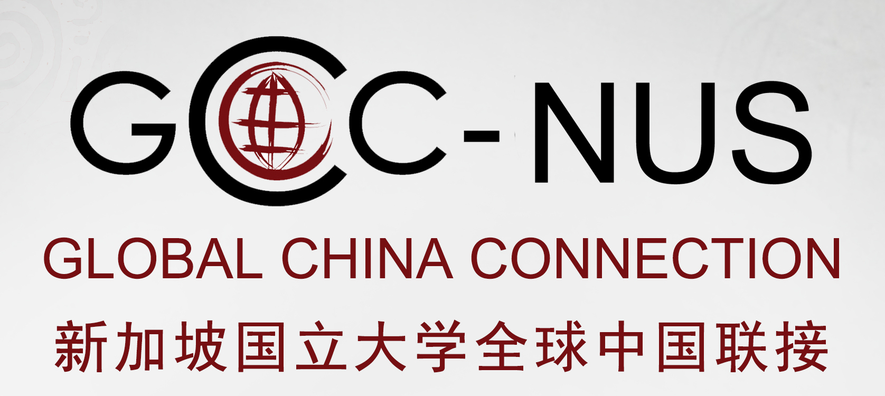
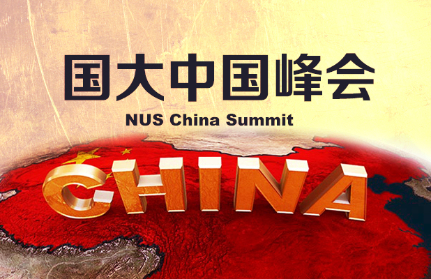

Offering the best of global knowledge with deep Asian insights, preparing students to lead Asian businesses to the forefront of the world economy and to help global businesses succeed in Asia.
Global China Connect - NUS
Promoting strong and mutually beneficial relations between China and the rest of the world through personal relationships established among prospective young leaders.

China Summit 2017

China Summit 2017
NUS China Summit was initiated by Global China Connection – National University of Singapore Chapter (GCC-NUS), to establish a platform for Singapore’s tertiary school students and young entrepreneurs to gain a holistic understanding of the emerging China market, as well as its existing and potential opportunities and challenges. These are some of our sponsors and partners:
-

NUS Business School
Sponsor
-
Singapore’s first liberal arts educational institution and the centre for International and Professional Experience

Yale-NUS College
Sponsor
-
Research centre under NUS Business School having distinctive international perspectives and strong affiliations with companies and academic institutions in both China and Singapore

NUS China Business Centre
Partner
-
To nurture an inclusive bilingual and bicultural group of Singaporeans through extensive use of the Chinese language as the medium of communication, so as to sustain our multi-cultural heritage, and to develop a cultural and economic bridge linking the world and China.

Singapore Business China
Partner
-
Similar to GCC-NUS, we are committed to connecting Yale-NUS, as well as the wider NUS community, on China-related fields.

Yale-NUS Global China Connect
Partner
Event Highlights
The event will consist of 1 career fair and 3 - 4 panel discussions. The career fair will be hosted by prominent companies, offering opportunities for participants to network with the company representatives. The panels will address some critical issues China faces and explore its significant presence in the global economy. Q&A opportunities with the panelists will also enhance attendees’ knowledge of the relevant topics and facilitate meaningful discussions in their areas of interest. We will invite notable industry professionals from these fields: Finance & Investment, FinTech, Real Estate, Culture Industry, Technology, and FMCG.

Copyright (c) 2015 - 2016, Global China Connect - NUS; all rights reserved.
Template by Bootstrapious. Ported to Hugo by DevCows